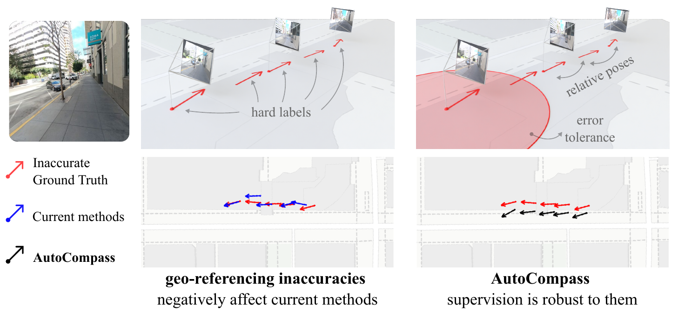
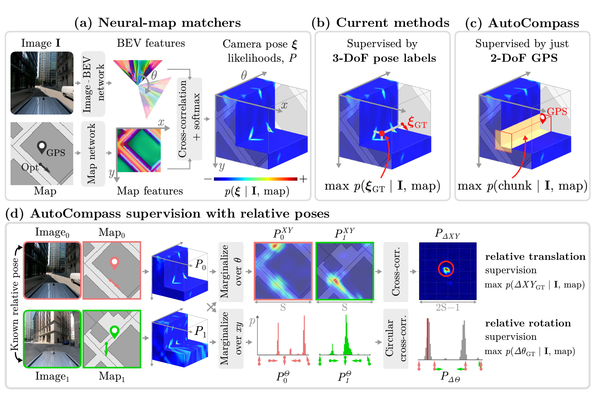
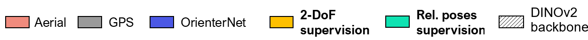
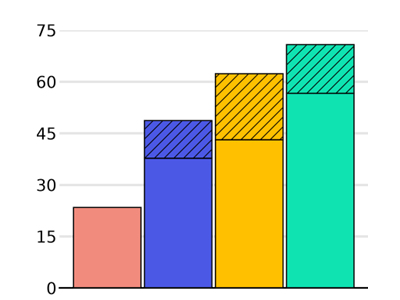
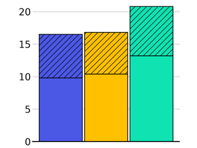
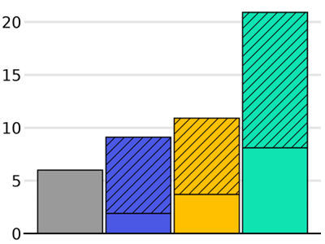
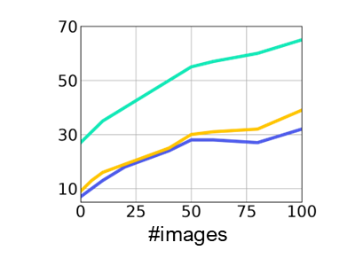
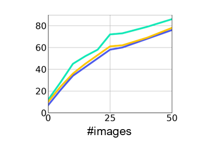
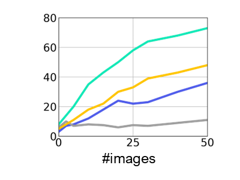

Neural map matchers estimate an image's 3-DoF pose relative to a 2D map. These models are trained on large-scale datasets of geo-referenced images, whose position and heading labels often contain noise that affects the trained models. To address this, we present AutoCompass, a supervision approach for training neural map matchers from inaccurate absolute pose labels. First, we show that heading labels are unnecessary: trained from raw GPS labels, models learn to predict accurate headings, automatically. Second, defining a tolerance region around raw GPS improves positional accuracy. Third, if available, our supervision uses relative poses between training images, obtained via SLAM or SfM, which provide a more accurate training signal. Across driving and egocentric benchmarks, AutoCompass consistently outperforms counterparts trained with the usual strong reliance on absolute pose labels.

AutoCompass is more robust to the presence of noise in the ground-truth pose labels. This robustness is reflected in the sharper features it learns. In contrast, existing approaches, such as OrienterNet, rely strongly on these labels. Therefore, their learned representations become spatially blurred, as the model must explain these errors on average.
This difference is much more striking when comparing the norms of these learned features. Intuitively, the cross-correlation scores are proportional to these norm values, and, as such, they are useful for understanding the regions of the map that the model focuses on for localization. AutoCompass focuses on distinctive cues that are commonly visible in the query images, such as building corners or lane intersections. In contrast, OrienterNet focuses on much larger regions, such as entire buildings, which are only useful for coarse localization.
AutoCompass sets a new state of the art. It outperforms OrienterNet, the strongest alternative that uses the same 2D maps, as well as the best-performing approach that instead relies on aerial imagery as its map representation. AutoCompass is also significantly more accurate than GPS.
This is especially the case when fusing multiple single-view estimates in order to geo-reference an input sequence with known relative poses. This confirms that the more accurate single-view estimates are also benefitial for sequential fusion as the accuracy of AutoCompass improves more rapidly tan that of OrienterNet and GPS.







If you find this work useful for your research, please consider citing our paper:
@inproceedings{tirado2026autocompass,
title={{AutoCompass: Accurate Visual Localization on Public Maps by Learning from Weak Labels}},
author={
Tirado-Garín, Javier and
Paul, Alan Savio and
Chen, Shuai and
Barroso-Laguna, Axel and
Cavallari, Tommaso and
Turmukhambetov, Daniyar and
Prisacariu, Victor Adrian and
Brachmann, Eric
},
booktitle={ECCV},
year={2026}
}